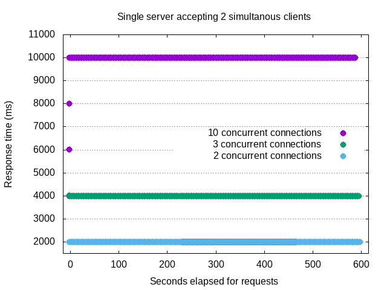
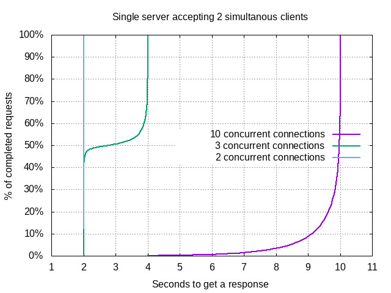
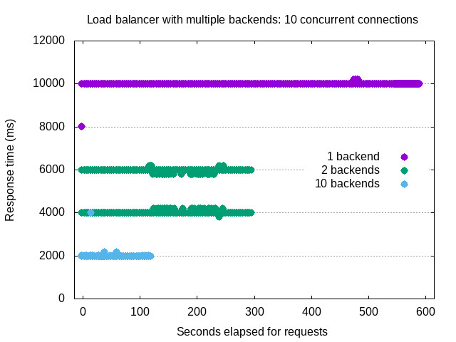
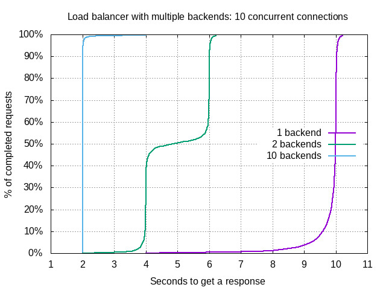

por Fernando G. Tinetti & Christian A. Rodríguez
VII Jornadas de Cloud Computing & Big Data
Pero el escalado sobreestimado produce un costo monetario inaceptable
Incluso se complica aún más el escalamiento en servicios como filesystems o bases de datos
version: '3'
services:
app:
image: php:7-apache
volumes:
- ./www-conf/apache-tune.conf:/etc/apache2/conf-enabled/apache-tune.conf
- ./www:/var/www/html
ports:
- "8080:80"
MaxRequestWorkers 2
StartServers 1
MinSpareServers 1
ServerLimit 2
KeepAlive Off
Wellcome, my hostname is: <?php echo $_SERVER['SERVER_ADDR']; ?>
Wait....
<?php
flush();
ob_flush();
sleep(2);
?>
Done!
ab -l -c2 -n600 http://localhost:8080/
|  |  |
version: '3'
services:
app:
image: php:7-apache
volumes:
- ./www-conf/apache-tune.conf:/etc/apache2/conf-enabled/apache-tune.conf
- ./www:/var/www/html
environment:
VIRTUAL_HOST: php-scale.probe
lb:
image: jwilder/nginx-proxy
ports:
- "8090:80"
volumes:
- ./www-conf/nginx-proxy.conf:/etc/nginx/conf.d/custom_proxy.conf
- /var/run/docker.sock:/tmp/docker.sock:ro
proxy_read_timeout 15;
docker-compose -f docker-compose.lb.yml updocker-compose -f docker-compose.lb.yml up --scale app=2curl -H 'Host: php-scale.probe' 'http://localhost:8090'
ab -l -c10 -H 'Host: php-scale.probe' -n600 http://localhost:8090/
|  |  |